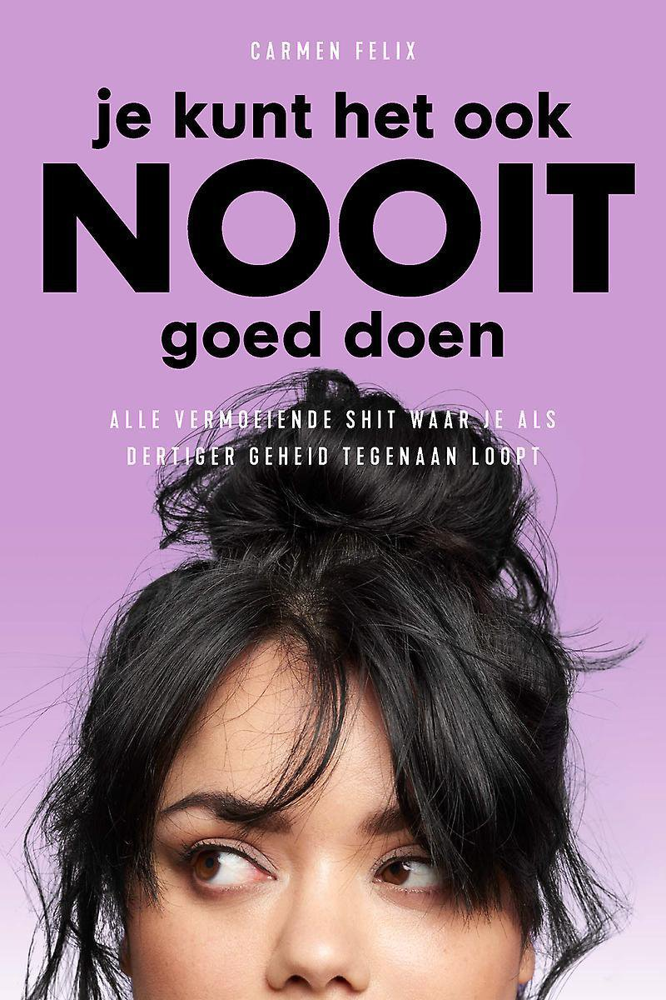
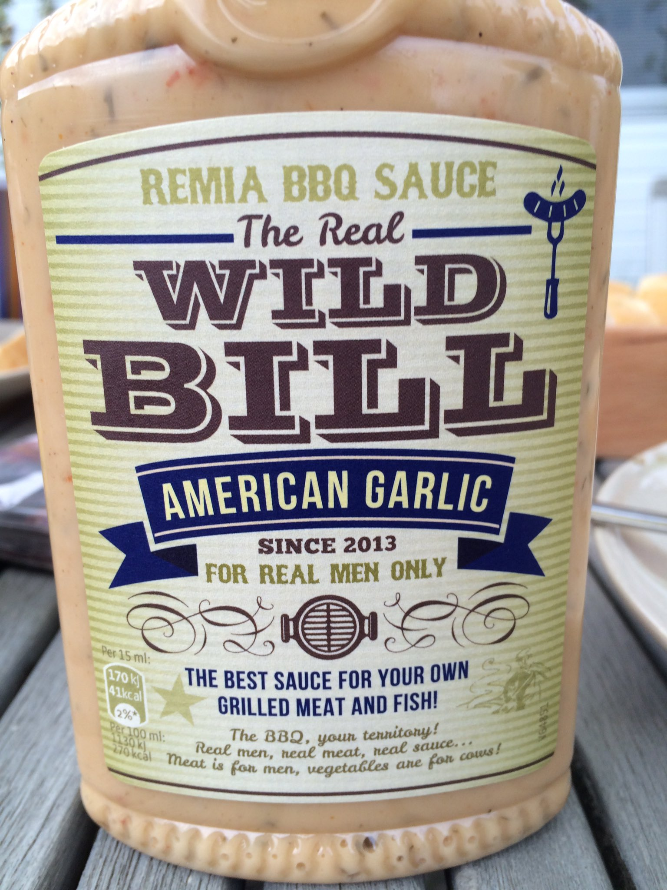

Damn, Honey - Afl 43
Datum: 22 mei 2020
Podcast duur: 84 min
Over alle ballen in de lucht, ambitieschaarste en puzzelhaat. Met Carmen Felix
Om te testen: Elk bericht blokje heeft een of twee interactieve links/hovers/dingen verstopt.
Je kunt over *lacht* hoveren. de intro tune en dikgedrukte woorden. En je kunt klikken op ondergelijnde woorden.
Wat vind je van de interactie?
Wat vind je prettig tijdens het lezen van de transcript? of wat zou je weglaten?
Is er iets overbodig?
-
Intro Tune
-
ML
Jup, en aan onze digitale tafel is aangeschoven Carmen Felix , ook wel op deTwits bekend als: Carmen Felix van Hollandia. Ze is schrijver voor oa &C enOneWorld, maar ze poepte er recent ook een heel boek uit, getiteld ‘Je kunt het ook nooit goed doen’ 
-
Carmen Felix
Dankjewel *lacht* hoi!
-
NYD
Want… “ik ben een man” *lacht*
-
ML
He???? Huh????
-
NYD
Ja, ik had een eh, eh, een eh, receptentip van Marie Lotte gekregen uit de Allerhande
 . Hoe old skool is dat?
. Hoe old skool is dat? -
NYD
‘t Is vega en met een kleine aanpassing vegan, hartstikke leuk, hartstikke lekker, TIP! En ik zag al in het rijtje dat er een bepaald type BBQ-saus voor nodig was, en nu weet ik dat Remia een BBQ-saus heeft ‘for real men only’ 
-
ML
*lacht*
-
NYD
En dat heb ik dus gekocht, ik heb vrijwillig mijn geld aan deze mensen gegeven. Het doet me denken aan… Ik had al eerder een minst feministische dat ik Women’s balance thee
 had gekocht
had gekocht -
NYD
maar dit is NOG kutter. Ook dat idee van alleen koeien eten groente?
bij koe emoji als je hovert? als iets geks? is grappig right?